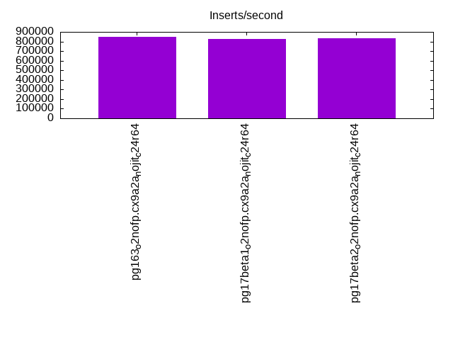
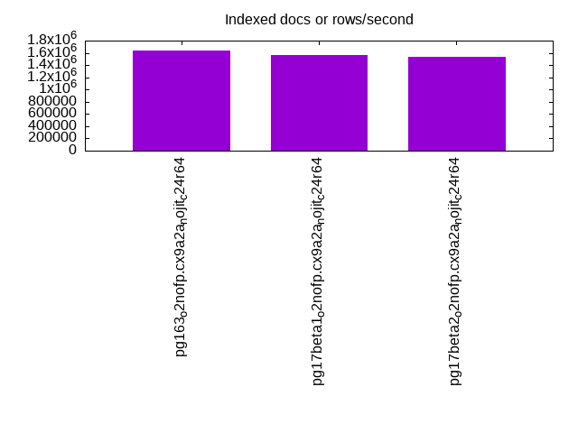
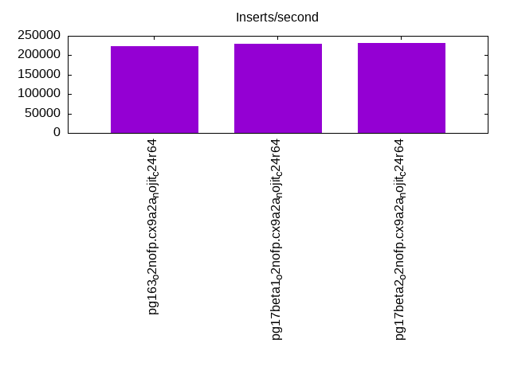
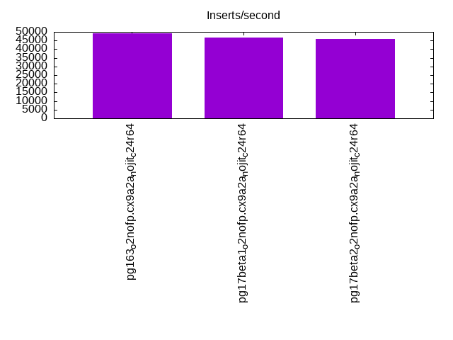
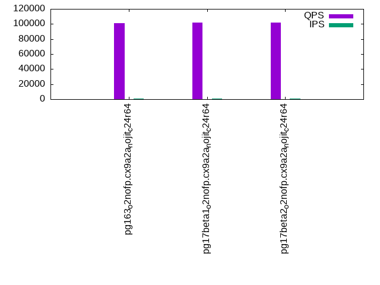
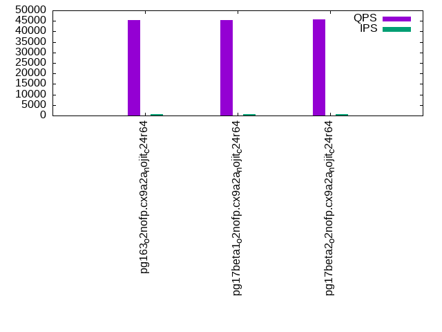
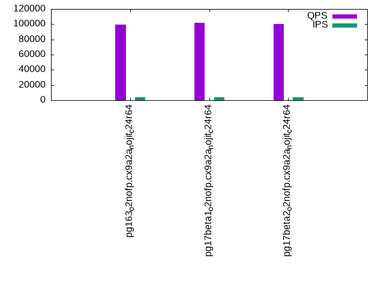
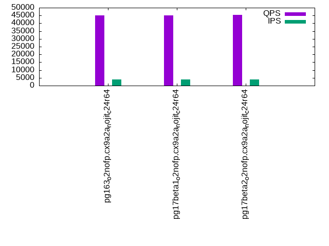
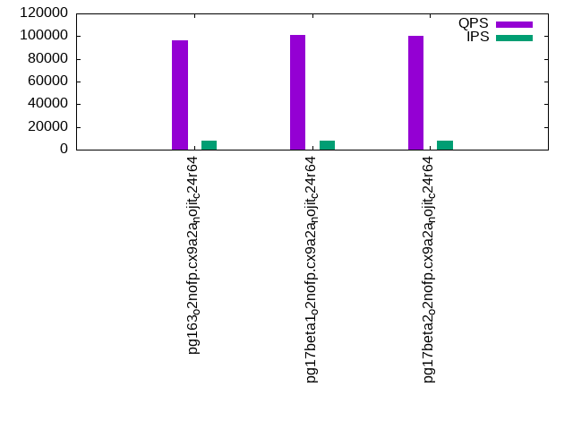
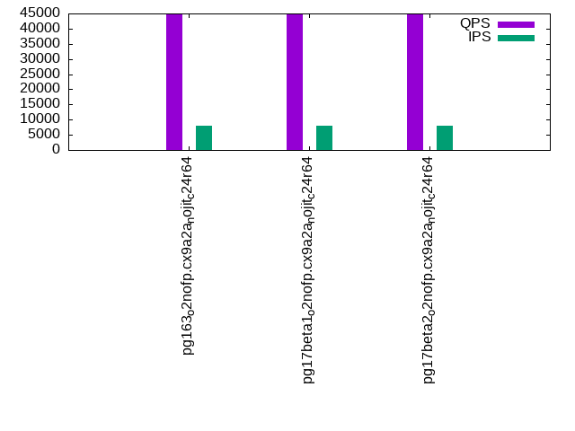

This is a report for the insert benchmark with 80M docs and 8 client(s). It is generated by scripts (bash, awk, sed) and Tufte might not be impressed. An overview of the insert benchmark is here and a short update is here. Below, by DBMS, I mean DBMS+version.config. An example is my8020.c10b40 where my means MySQL, 8020 is version 8.0.20 and c10b40 is the name for the configuration file.
The test server has is a c2d-standard-30 with HT off, 16 cores, 64G RAM, Ubuntu 22.04 and ext4 using SW RAID 0 and 2 NVMe devices. The benchmark was run with 8 clients and there were 1 or 3 connections per client (1 for queries or inserts without rate limits, 1+1 for rate limited inserts+deletes). It uses 8 table with a table per client. It loads 10M rows per table without secondary indexes, creates 3 secondary indexes per table, then inserts 40m+10m rows per table with a delete per insert to avoid growing the table. It then does 6 read+write tests for 1800s each that do queries as fast as possible with 100,100,500,500,1000,1000 inserts/s and the same for deletes/s per client concurrent with the queries. The database is cached in memory. Clients and the DBMS share one server. The per-database configs are in the per-database subdirectories here.
The tested DBMS are:
The numbers are inserts/s for l.i0, l.i1 and l.i2, indexed docs (or rows) /s for l.x and queries/s for qr100, qp100 thru qr1000, qp1000" The values are the average rate over the entire test for inserts (IPS) and queries (QPS). The range of values for IPS and QPS is split into 3 parts: bottom 25%, middle 50%, top 25%. Values in the bottom 25% have a red background, values in the top 25% have a green background and values in the middle have no color. A gray background is used for values that can be ignored because the DBMS did not sustain the target insert rate. Red backgrounds are not used when the minimum value is within 80% of the max value.
| dbms | l.i0 | l.x | l.i1 | l.i2 | qr100 | qp100 | qr500 | qp500 | qr1000 | qp1000 |
|---|---|---|---|---|---|---|---|---|---|---|
| pg163_o2nofp.cx9a2a_nojit_c24r64 | 851064 | 1632655 | 222377 | 49200 | 100877 | 45295 | 99204 | 45064 | 96466 | 44716 |
| pg17beta1_o2nofp.cx9a2a_nojit_c24r64 | 824742 | 1568629 | 229720 | 46811 | 101643 | 45543 | 101953 | 45055 | 101059 | 44643 |
| pg17beta2_o2nofp.cx9a2a_nojit_c24r64 | 833333 | 1538463 | 232052 | 45845 | 101929 | 45636 | 100291 | 45315 | 100130 | 44908 |
This table has relative throughput, throughput for the DBMS relative to the DBMS in the first line, using the absolute throughput from the previous table. Values less than 0.95 have a yellow background. Values greater than 1.05 have a blue background.
| dbms | l.i0 | l.x | l.i1 | l.i2 | qr100 | qp100 | qr500 | qp500 | qr1000 | qp1000 |
|---|---|---|---|---|---|---|---|---|---|---|
| pg163_o2nofp.cx9a2a_nojit_c24r64 | 1.00 | 1.00 | 1.00 | 1.00 | 1.00 | 1.00 | 1.00 | 1.00 | 1.00 | 1.00 |
| pg17beta1_o2nofp.cx9a2a_nojit_c24r64 | 0.97 | 0.96 | 1.03 | 0.95 | 1.01 | 1.01 | 1.03 | 1.00 | 1.05 | 1.00 |
| pg17beta2_o2nofp.cx9a2a_nojit_c24r64 | 0.98 | 0.94 | 1.04 | 0.93 | 1.01 | 1.01 | 1.01 | 1.01 | 1.04 | 1.00 |
This lists the average rate of inserts/s for the tests that do inserts concurrent with queries. For such tests the query rate is listed in the table above. The read+write tests are setup so that the insert rate should match the target rate every second. Cells that are not at least 95% of the target have a red background to indicate a failure to satisfy the target.
| dbms | qr100.L1 | qp100.L2 | qr500.L3 | qp500.L4 | qr1000.L5 | qp1000.L6 |
|---|---|---|---|---|---|---|
| pg163_o2nofp.cx9a2a_nojit_c24r64 | 796 | 796 | 3980 | 3980 | 7960 | 7960 |
| pg17beta1_o2nofp.cx9a2a_nojit_c24r64 | 796 | 796 | 3980 | 3980 | 7960 | 7960 |
| pg17beta2_o2nofp.cx9a2a_nojit_c24r64 | 796 | 796 | 3980 | 3980 | 7960 | 7960 |
| target | 800 | 800 | 4000 | 4000 | 8000 | 8000 |
l.i0: load without secondary indexes. Graphs for performance per 1-second interval are here.
Average throughput:
Insert response time histogram: each cell has the percentage of responses that take <= the time in the header and max is the max response time in seconds. For the max column values in the top 25% of the range have a red background and in the bottom 25% of the range have a green background. The red background is not used when the min value is within 80% of the max value.
| dbms | 256us | 1ms | 4ms | 16ms | 64ms | 256ms | 1s | 4s | 16s | gt | max |
|---|---|---|---|---|---|---|---|---|---|---|---|
| pg163_o2nofp.cx9a2a_nojit_c24r64 | 98.202 | 1.687 | 0.090 | 0.003 | 0.003 | 0.015 | 0.921 | ||||
| pg17beta1_o2nofp.cx9a2a_nojit_c24r64 | 93.298 | 6.643 | 0.039 | 0.003 | 0.002 | 0.015 | 0.914 | ||||
| pg17beta2_o2nofp.cx9a2a_nojit_c24r64 | 93.805 | 6.122 | 0.048 | 0.006 | 0.008 | 0.012 | 0.896 |
Performance metrics for the DBMS listed above. Some are normalized by throughput, others are not. Legend for results is here.
ips qps rps rmbps wps wmbps rpq rkbpq wpi wkbpi csps cpups cspq cpupq dbgb1 dbgb2 rss maxop p50 p99 tag 851064 0 0 0.0 1538.8 371.0 0.000 0.000 0.002 0.446 78158 64.4 0.092 12 7.7 20.7 0.2 0.921 142448 12387 pg163_o2nofp.cx9a2a_nojit_c24r64 824742 0 0 0.0 1458.5 351.0 0.000 0.000 0.002 0.436 78740 62.0 0.095 12 7.7 20.7 0.2 0.914 134756 22582 pg17beta1_o2nofp.cx9a2a_nojit_c24r64 833333 0 0 0.0 1450.8 351.1 0.000 0.000 0.002 0.431 78799 61.8 0.095 12 7.7 20.7 0.2 0.896 136056 18381 pg17beta2_o2nofp.cx9a2a_nojit_c24r64
l.x: create secondary indexes.
Average throughput:
Performance metrics for the DBMS listed above. Some are normalized by throughput, others are not. Legend for results is here.
ips qps rps rmbps wps wmbps rpq rkbpq wpi wkbpi csps cpups cspq cpupq dbgb1 dbgb2 rss maxop p50 p99 tag 1632655 0 0 0.0 1229.5 457.4 0.000 0.000 0.001 0.287 17018 27.8 0.010 3 15.4 35.5 6.5 0.003 NA NA pg163_o2nofp.cx9a2a_nojit_c24r64 1568629 0 0 0.0 1138.9 421.4 0.000 0.000 0.001 0.275 8428 25.3 0.005 3 15.4 35.4 6.0 0.002 NA NA pg17beta1_o2nofp.cx9a2a_nojit_c24r64 1538463 0 0 0.0 1123.5 414.7 0.000 0.000 0.001 0.276 7809 25.5 0.005 3 15.4 35.4 6.0 0.015 NA NA pg17beta2_o2nofp.cx9a2a_nojit_c24r64
l.i1: continue load after secondary indexes created with 50 inserts per transaction. Graphs for performance per 1-second interval are here.
Average throughput:
Insert response time histogram: each cell has the percentage of responses that take <= the time in the header and max is the max response time in seconds. For the max column values in the top 25% of the range have a red background and in the bottom 25% of the range have a green background. The red background is not used when the min value is within 80% of the max value.
| dbms | 256us | 1ms | 4ms | 16ms | 64ms | 256ms | 1s | 4s | 16s | gt | max |
|---|---|---|---|---|---|---|---|---|---|---|---|
| pg163_o2nofp.cx9a2a_nojit_c24r64 | 16.514 | 81.277 | 2.018 | 0.186 | 0.004 | nonzero | 0.448 | ||||
| pg17beta1_o2nofp.cx9a2a_nojit_c24r64 | 21.792 | 76.570 | 1.447 | 0.185 | 0.005 | 0.001 | 0.775 | ||||
| pg17beta2_o2nofp.cx9a2a_nojit_c24r64 | 23.063 | 75.473 | 1.276 | 0.183 | 0.005 | 0.001 | 0.841 |
Delete response time histogram: each cell has the percentage of responses that take <= the time in the header and max is the max response time in seconds. For the max column values in the top 25% of the range have a red background and in the bottom 25% of the range have a green background. The red background is not used when the min value is within 80% of the max value.
| dbms | 256us | 1ms | 4ms | 16ms | 64ms | 256ms | 1s | 4s | 16s | gt | max |
|---|---|---|---|---|---|---|---|---|---|---|---|
| pg163_o2nofp.cx9a2a_nojit_c24r64 | 25.842 | 72.928 | 1.065 | 0.162 | 0.003 | nonzero | 0.449 | ||||
| pg17beta1_o2nofp.cx9a2a_nojit_c24r64 | 26.051 | 72.906 | 0.875 | 0.164 | 0.003 | 0.001 | 0.775 | ||||
| pg17beta2_o2nofp.cx9a2a_nojit_c24r64 | 26.488 | 72.545 | 0.801 | 0.162 | 0.004 | 0.001 | 0.841 |
Performance metrics for the DBMS listed above. Some are normalized by throughput, others are not. Legend for results is here.
ips qps rps rmbps wps wmbps rpq rkbpq wpi wkbpi csps cpups cspq cpupq dbgb1 dbgb2 rss maxop p50 p99 tag 222377 0 0 0.0 1397.3 272.1 0.000 0.000 0.006 1.253 83168 74.0 0.374 53 22.9 87.0 15.5 0.448 29775 5544 pg163_o2nofp.cx9a2a_nojit_c24r64 229720 0 0 0.0 1453.5 282.8 0.000 0.000 0.006 1.261 75120 75.0 0.327 52 22.9 86.9 18.1 0.775 31316 5095 pg17beta1_o2nofp.cx9a2a_nojit_c24r64 232052 0 0 0.0 1465.5 284.6 0.000 0.000 0.006 1.256 74310 74.8 0.320 52 22.9 86.9 8.9 0.841 32260 4845 pg17beta2_o2nofp.cx9a2a_nojit_c24r64
l.i2: continue load after secondary indexes created with 5 inserts per transaction. Graphs for performance per 1-second interval are here.
Average throughput:
Insert response time histogram: each cell has the percentage of responses that take <= the time in the header and max is the max response time in seconds. For the max column values in the top 25% of the range have a red background and in the bottom 25% of the range have a green background. The red background is not used when the min value is within 80% of the max value.
| dbms | 256us | 1ms | 4ms | 16ms | 64ms | 256ms | 1s | 4s | 16s | gt | max |
|---|---|---|---|---|---|---|---|---|---|---|---|
| pg163_o2nofp.cx9a2a_nojit_c24r64 | 57.963 | 40.835 | 1.199 | 0.002 | 0.001 | 0.057 | |||||
| pg17beta1_o2nofp.cx9a2a_nojit_c24r64 | 68.013 | 31.376 | 0.610 | nonzero | nonzero | 0.050 | |||||
| pg17beta2_o2nofp.cx9a2a_nojit_c24r64 | 67.036 | 32.360 | 0.602 | 0.001 | 0.001 | nonzero | 0.103 |
Delete response time histogram: each cell has the percentage of responses that take <= the time in the header and max is the max response time in seconds. For the max column values in the top 25% of the range have a red background and in the bottom 25% of the range have a green background. The red background is not used when the min value is within 80% of the max value.
| dbms | 256us | 1ms | 4ms | 16ms | 64ms | 256ms | 1s | 4s | 16s | gt | max |
|---|---|---|---|---|---|---|---|---|---|---|---|
| pg163_o2nofp.cx9a2a_nojit_c24r64 | 3.533 | 72.217 | 24.245 | 0.005 | 0.001 | 0.057 | |||||
| pg17beta1_o2nofp.cx9a2a_nojit_c24r64 | 1.948 | 69.619 | 28.429 | 0.004 | 0.001 | 0.051 | |||||
| pg17beta2_o2nofp.cx9a2a_nojit_c24r64 | 1.845 | 74.482 | 23.668 | 0.004 | 0.001 | nonzero | 0.086 |
Performance metrics for the DBMS listed above. Some are normalized by throughput, others are not. Legend for results is here.
ips qps rps rmbps wps wmbps rpq rkbpq wpi wkbpi csps cpups cspq cpupq dbgb1 dbgb2 rss maxop p50 p99 tag 49200 0 0 0.0 262.3 52.4 0.000 0.000 0.005 1.091 170633 71.3 3.468 232 22.8 86.8 14.5 0.057 5035 3272 pg163_o2nofp.cx9a2a_nojit_c24r64 46811 0 0 0.0 250.6 50.7 0.000 0.000 0.005 1.110 154173 68.9 3.294 236 22.8 86.9 0.8 0.050 5549 4096 pg17beta1_o2nofp.cx9a2a_nojit_c24r64 45845 0 0 0.0 245.3 49.9 0.000 0.000 0.005 1.115 150809 66.4 3.290 232 22.8 86.9 0.4 0.103 5494 4225 pg17beta2_o2nofp.cx9a2a_nojit_c24r64
qr100.L1: range queries with 100 insert/s per client. Graphs for performance per 1-second interval are here.
Average throughput:
Query response time histogram: each cell has the percentage of responses that take <= the time in the header and max is the max response time in seconds. For max values in the top 25% of the range have a red background and in the bottom 25% of the range have a green background. The red background is not used when the min value is within 80% of the max value.
| dbms | 256us | 1ms | 4ms | 16ms | 64ms | 256ms | 1s | 4s | 16s | gt | max |
|---|---|---|---|---|---|---|---|---|---|---|---|
| pg163_o2nofp.cx9a2a_nojit_c24r64 | 99.987 | 0.012 | nonzero | nonzero | 0.004 | ||||||
| pg17beta1_o2nofp.cx9a2a_nojit_c24r64 | 99.983 | 0.016 | 0.001 | nonzero | 0.004 | ||||||
| pg17beta2_o2nofp.cx9a2a_nojit_c24r64 | 99.987 | 0.012 | 0.001 | nonzero | 0.010 |
Insert response time histogram: each cell has the percentage of responses that take <= the time in the header and max is the max response time in seconds. For max values in the top 25% of the range have a red background and in the bottom 25% of the range have a green background. The red background is not used when the min value is within 80% of the max value.
| dbms | 256us | 1ms | 4ms | 16ms | 64ms | 256ms | 1s | 4s | 16s | gt | max |
|---|---|---|---|---|---|---|---|---|---|---|---|
| pg163_o2nofp.cx9a2a_nojit_c24r64 | 4.267 | 95.677 | 0.056 | 0.007 | |||||||
| pg17beta1_o2nofp.cx9a2a_nojit_c24r64 | 3.003 | 96.931 | 0.066 | 0.007 | |||||||
| pg17beta2_o2nofp.cx9a2a_nojit_c24r64 | 3.111 | 96.826 | 0.062 | 0.007 |
Delete response time histogram: each cell has the percentage of responses that take <= the time in the header and max is the max response time in seconds. For max values in the top 25% of the range have a red background and in the bottom 25% of the range have a green background. The red background is not used when the min value is within 80% of the max value.
| dbms | 256us | 1ms | 4ms | 16ms | 64ms | 256ms | 1s | 4s | 16s | gt | max |
|---|---|---|---|---|---|---|---|---|---|---|---|
| pg163_o2nofp.cx9a2a_nojit_c24r64 | 85.628 | 14.372 | 0.003 | ||||||||
| pg17beta1_o2nofp.cx9a2a_nojit_c24r64 | 77.878 | 22.122 | 0.004 | ||||||||
| pg17beta2_o2nofp.cx9a2a_nojit_c24r64 | 75.698 | 24.302 | 0.003 |
Performance metrics for the DBMS listed above. Some are normalized by throughput, others are not. Legend for results is here.
ips qps rps rmbps wps wmbps rpq rkbpq wpi wkbpi csps cpups cspq cpupq dbgb1 dbgb2 rss maxop p50 p99 tag 796 100877 0 0.0 24.0 3.6 0.000 0.000 0.030 4.637 380504 48.2 3.772 76 22.8 86.8 0.4 0.004 12786 11619 pg163_o2nofp.cx9a2a_nojit_c24r64 796 101643 0 0.0 24.1 3.6 0.000 0.000 0.030 4.635 383799 48.2 3.776 76 22.8 86.8 0.4 0.004 12898 11731 pg17beta1_o2nofp.cx9a2a_nojit_c24r64 796 101929 0 0.0 24.0 3.6 0.000 0.000 0.030 4.636 383749 48.2 3.765 76 22.8 86.9 0.4 0.010 12850 11651 pg17beta2_o2nofp.cx9a2a_nojit_c24r64
qp100.L2: point queries with 100 insert/s per client. Graphs for performance per 1-second interval are here.
Average throughput:
Query response time histogram: each cell has the percentage of responses that take <= the time in the header and max is the max response time in seconds. For max values in the top 25% of the range have a red background and in the bottom 25% of the range have a green background. The red background is not used when the min value is within 80% of the max value.
| dbms | 256us | 1ms | 4ms | 16ms | 64ms | 256ms | 1s | 4s | 16s | gt | max |
|---|---|---|---|---|---|---|---|---|---|---|---|
| pg163_o2nofp.cx9a2a_nojit_c24r64 | 99.174 | 0.821 | 0.005 | nonzero | 0.010 | ||||||
| pg17beta1_o2nofp.cx9a2a_nojit_c24r64 | 99.141 | 0.854 | 0.004 | 0.003 | |||||||
| pg17beta2_o2nofp.cx9a2a_nojit_c24r64 | 99.157 | 0.836 | 0.007 | nonzero | 0.011 |
Insert response time histogram: each cell has the percentage of responses that take <= the time in the header and max is the max response time in seconds. For max values in the top 25% of the range have a red background and in the bottom 25% of the range have a green background. The red background is not used when the min value is within 80% of the max value.
| dbms | 256us | 1ms | 4ms | 16ms | 64ms | 256ms | 1s | 4s | 16s | gt | max |
|---|---|---|---|---|---|---|---|---|---|---|---|
| pg163_o2nofp.cx9a2a_nojit_c24r64 | 0.660 | 99.267 | 0.073 | 0.006 | |||||||
| pg17beta1_o2nofp.cx9a2a_nojit_c24r64 | 0.118 | 99.819 | 0.062 | 0.006 | |||||||
| pg17beta2_o2nofp.cx9a2a_nojit_c24r64 | 0.472 | 99.455 | 0.073 | 0.006 |
Delete response time histogram: each cell has the percentage of responses that take <= the time in the header and max is the max response time in seconds. For max values in the top 25% of the range have a red background and in the bottom 25% of the range have a green background. The red background is not used when the min value is within 80% of the max value.
| dbms | 256us | 1ms | 4ms | 16ms | 64ms | 256ms | 1s | 4s | 16s | gt | max |
|---|---|---|---|---|---|---|---|---|---|---|---|
| pg163_o2nofp.cx9a2a_nojit_c24r64 | 33.663 | 66.309 | 0.028 | 0.006 | |||||||
| pg17beta1_o2nofp.cx9a2a_nojit_c24r64 | 6.424 | 93.549 | 0.028 | 0.010 | |||||||
| pg17beta2_o2nofp.cx9a2a_nojit_c24r64 | 15.979 | 83.986 | 0.035 | 0.013 |
Performance metrics for the DBMS listed above. Some are normalized by throughput, others are not. Legend for results is here.
ips qps rps rmbps wps wmbps rpq rkbpq wpi wkbpi csps cpups cspq cpupq dbgb1 dbgb2 rss maxop p50 p99 tag 796 45295 0 0.0 106.4 7.5 0.000 0.000 0.134 9.626 178330 50.9 3.937 180 22.8 86.8 0.4 0.010 5690 5548 pg163_o2nofp.cx9a2a_nojit_c24r64 796 45543 0 0.0 105.8 7.5 0.000 0.000 0.133 9.610 178608 51.2 3.922 180 22.8 86.7 4.1 0.003 5738 5610 pg17beta1_o2nofp.cx9a2a_nojit_c24r64 796 45636 0 0.0 105.5 7.5 0.000 0.000 0.132 9.608 179955 50.9 3.943 178 22.8 86.7 4.0 0.011 5724 5596 pg17beta2_o2nofp.cx9a2a_nojit_c24r64
qr500.L3: range queries with 500 insert/s per client. Graphs for performance per 1-second interval are here.
Average throughput:
Query response time histogram: each cell has the percentage of responses that take <= the time in the header and max is the max response time in seconds. For max values in the top 25% of the range have a red background and in the bottom 25% of the range have a green background. The red background is not used when the min value is within 80% of the max value.
| dbms | 256us | 1ms | 4ms | 16ms | 64ms | 256ms | 1s | 4s | 16s | gt | max |
|---|---|---|---|---|---|---|---|---|---|---|---|
| pg163_o2nofp.cx9a2a_nojit_c24r64 | 99.972 | 0.023 | 0.004 | nonzero | nonzero | 0.027 | |||||
| pg17beta1_o2nofp.cx9a2a_nojit_c24r64 | 99.979 | 0.018 | 0.003 | nonzero | nonzero | 0.028 | |||||
| pg17beta2_o2nofp.cx9a2a_nojit_c24r64 | 99.975 | 0.022 | 0.003 | nonzero | nonzero | 0.038 |
Insert response time histogram: each cell has the percentage of responses that take <= the time in the header and max is the max response time in seconds. For max values in the top 25% of the range have a red background and in the bottom 25% of the range have a green background. The red background is not used when the min value is within 80% of the max value.
| dbms | 256us | 1ms | 4ms | 16ms | 64ms | 256ms | 1s | 4s | 16s | gt | max |
|---|---|---|---|---|---|---|---|---|---|---|---|
| pg163_o2nofp.cx9a2a_nojit_c24r64 | 43.357 | 55.958 | 0.657 | 0.028 | 0.036 | ||||||
| pg17beta1_o2nofp.cx9a2a_nojit_c24r64 | 45.048 | 54.498 | 0.430 | 0.024 | 0.034 | ||||||
| pg17beta2_o2nofp.cx9a2a_nojit_c24r64 | 50.111 | 49.486 | 0.382 | 0.021 | 0.031 |
Delete response time histogram: each cell has the percentage of responses that take <= the time in the header and max is the max response time in seconds. For max values in the top 25% of the range have a red background and in the bottom 25% of the range have a green background. The red background is not used when the min value is within 80% of the max value.
| dbms | 256us | 1ms | 4ms | 16ms | 64ms | 256ms | 1s | 4s | 16s | gt | max |
|---|---|---|---|---|---|---|---|---|---|---|---|
| pg163_o2nofp.cx9a2a_nojit_c24r64 | 64.742 | 34.594 | 0.644 | 0.019 | 0.034 | ||||||
| pg17beta1_o2nofp.cx9a2a_nojit_c24r64 | 56.028 | 43.406 | 0.544 | 0.022 | 0.031 | ||||||
| pg17beta2_o2nofp.cx9a2a_nojit_c24r64 | 59.535 | 40.026 | 0.419 | 0.019 | 0.033 |
Performance metrics for the DBMS listed above. Some are normalized by throughput, others are not. Legend for results is here.
ips qps rps rmbps wps wmbps rpq rkbpq wpi wkbpi csps cpups cspq cpupq dbgb1 dbgb2 rss maxop p50 p99 tag 3980 99204 0 0.0 166.3 10.6 0.000 0.000 0.042 2.721 369408 49.2 3.724 79 22.8 81.9 22.6 0.027 12435 11316 pg163_o2nofp.cx9a2a_nojit_c24r64 3980 101953 0 0.0 166.5 10.6 0.000 0.000 0.042 2.723 379606 49.5 3.723 78 22.8 81.8 22.4 0.028 12758 12179 pg17beta1_o2nofp.cx9a2a_nojit_c24r64 3980 100291 0 0.0 166.1 10.6 0.000 0.000 0.042 2.720 373047 49.3 3.720 79 22.8 81.8 15.7 0.038 12551 11299 pg17beta2_o2nofp.cx9a2a_nojit_c24r64
qp500.L4: point queries with 500 insert/s per client. Graphs for performance per 1-second interval are here.
Average throughput:
Query response time histogram: each cell has the percentage of responses that take <= the time in the header and max is the max response time in seconds. For max values in the top 25% of the range have a red background and in the bottom 25% of the range have a green background. The red background is not used when the min value is within 80% of the max value.
| dbms | 256us | 1ms | 4ms | 16ms | 64ms | 256ms | 1s | 4s | 16s | gt | max |
|---|---|---|---|---|---|---|---|---|---|---|---|
| pg163_o2nofp.cx9a2a_nojit_c24r64 | 98.965 | 1.012 | 0.023 | 0.001 | 0.016 | ||||||
| pg17beta1_o2nofp.cx9a2a_nojit_c24r64 | 98.899 | 1.081 | 0.020 | nonzero | 0.013 | ||||||
| pg17beta2_o2nofp.cx9a2a_nojit_c24r64 | 98.952 | 1.032 | 0.016 | nonzero | nonzero | 0.041 |
Insert response time histogram: each cell has the percentage of responses that take <= the time in the header and max is the max response time in seconds. For max values in the top 25% of the range have a red background and in the bottom 25% of the range have a green background. The red background is not used when the min value is within 80% of the max value.
| dbms | 256us | 1ms | 4ms | 16ms | 64ms | 256ms | 1s | 4s | 16s | gt | max |
|---|---|---|---|---|---|---|---|---|---|---|---|
| pg163_o2nofp.cx9a2a_nojit_c24r64 | 35.292 | 64.167 | 0.526 | 0.014 | 0.024 | ||||||
| pg17beta1_o2nofp.cx9a2a_nojit_c24r64 | 31.638 | 67.892 | 0.465 | 0.006 | 0.019 | ||||||
| pg17beta2_o2nofp.cx9a2a_nojit_c24r64 | 50.358 | 49.392 | 0.236 | 0.015 | 0.022 |
Delete response time histogram: each cell has the percentage of responses that take <= the time in the header and max is the max response time in seconds. For max values in the top 25% of the range have a red background and in the bottom 25% of the range have a green background. The red background is not used when the min value is within 80% of the max value.
| dbms | 256us | 1ms | 4ms | 16ms | 64ms | 256ms | 1s | 4s | 16s | gt | max |
|---|---|---|---|---|---|---|---|---|---|---|---|
| pg163_o2nofp.cx9a2a_nojit_c24r64 | 60.588 | 38.969 | 0.440 | 0.003 | 0.023 | ||||||
| pg17beta1_o2nofp.cx9a2a_nojit_c24r64 | 47.876 | 51.599 | 0.523 | 0.002 | 0.019 | ||||||
| pg17beta2_o2nofp.cx9a2a_nojit_c24r64 | 60.251 | 39.553 | 0.191 | 0.006 | 0.021 |
Performance metrics for the DBMS listed above. Some are normalized by throughput, others are not. Legend for results is here.
ips qps rps rmbps wps wmbps rpq rkbpq wpi wkbpi csps cpups cspq cpupq dbgb1 dbgb2 rss maxop p50 p99 tag 3980 45064 0 0.0 81.5 11.3 0.000 0.000 0.020 2.916 177511 51.6 3.939 183 22.8 77.5 16.0 0.016 5674 5471 pg163_o2nofp.cx9a2a_nojit_c24r64 3980 45055 0 0.0 79.8 11.3 0.000 0.000 0.020 2.910 177414 51.7 3.938 184 22.8 77.4 9.0 0.013 5663 5452 pg17beta1_o2nofp.cx9a2a_nojit_c24r64 3980 45315 0 0.0 80.7 11.3 0.000 0.000 0.020 2.910 178004 51.6 3.928 182 22.8 77.4 2.8 0.041 5709 5546 pg17beta2_o2nofp.cx9a2a_nojit_c24r64
qr1000.L5: range queries with 1000 insert/s per client. Graphs for performance per 1-second interval are here.
Average throughput:
Query response time histogram: each cell has the percentage of responses that take <= the time in the header and max is the max response time in seconds. For max values in the top 25% of the range have a red background and in the bottom 25% of the range have a green background. The red background is not used when the min value is within 80% of the max value.
| dbms | 256us | 1ms | 4ms | 16ms | 64ms | 256ms | 1s | 4s | 16s | gt | max |
|---|---|---|---|---|---|---|---|---|---|---|---|
| pg163_o2nofp.cx9a2a_nojit_c24r64 | 99.918 | 0.067 | 0.014 | 0.001 | nonzero | 0.037 | |||||
| pg17beta1_o2nofp.cx9a2a_nojit_c24r64 | 99.957 | 0.035 | 0.007 | 0.001 | nonzero | 0.040 | |||||
| pg17beta2_o2nofp.cx9a2a_nojit_c24r64 | 99.963 | 0.030 | 0.006 | 0.001 | nonzero | 0.038 |
Insert response time histogram: each cell has the percentage of responses that take <= the time in the header and max is the max response time in seconds. For max values in the top 25% of the range have a red background and in the bottom 25% of the range have a green background. The red background is not used when the min value is within 80% of the max value.
| dbms | 256us | 1ms | 4ms | 16ms | 64ms | 256ms | 1s | 4s | 16s | gt | max |
|---|---|---|---|---|---|---|---|---|---|---|---|
| pg163_o2nofp.cx9a2a_nojit_c24r64 | 37.181 | 61.048 | 1.686 | 0.084 | 0.040 | ||||||
| pg17beta1_o2nofp.cx9a2a_nojit_c24r64 | 45.427 | 53.202 | 1.318 | 0.053 | 0.043 | ||||||
| pg17beta2_o2nofp.cx9a2a_nojit_c24r64 | 46.737 | 51.834 | 1.345 | 0.083 | 0.039 |
Delete response time histogram: each cell has the percentage of responses that take <= the time in the header and max is the max response time in seconds. For max values in the top 25% of the range have a red background and in the bottom 25% of the range have a green background. The red background is not used when the min value is within 80% of the max value.
| dbms | 256us | 1ms | 4ms | 16ms | 64ms | 256ms | 1s | 4s | 16s | gt | max |
|---|---|---|---|---|---|---|---|---|---|---|---|
| pg163_o2nofp.cx9a2a_nojit_c24r64 | 59.239 | 39.203 | 1.499 | 0.059 | 0.041 | ||||||
| pg17beta1_o2nofp.cx9a2a_nojit_c24r64 | 55.460 | 43.107 | 1.388 | 0.045 | 0.042 | ||||||
| pg17beta2_o2nofp.cx9a2a_nojit_c24r64 | 56.597 | 41.995 | 1.336 | 0.071 | 0.050 |
Performance metrics for the DBMS listed above. Some are normalized by throughput, others are not. Legend for results is here.
ips qps rps rmbps wps wmbps rpq rkbpq wpi wkbpi csps cpups cspq cpupq dbgb1 dbgb2 rss maxop p50 p99 tag 7960 96466 0 0.0 89.3 14.4 0.000 0.000 0.011 1.853 356844 49.9 3.699 83 22.9 73.9 4.8 0.037 12243 10761 pg163_o2nofp.cx9a2a_nojit_c24r64 7960 101059 0 0.0 89.6 14.4 0.000 0.000 0.011 1.853 372964 50.5 3.691 80 22.9 73.8 3.1 0.040 12706 11891 pg17beta1_o2nofp.cx9a2a_nojit_c24r64 7960 100130 0 0.0 89.4 14.4 0.000 0.000 0.011 1.850 369291 50.5 3.688 81 22.8 73.8 9.3 0.038 12626 12023 pg17beta2_o2nofp.cx9a2a_nojit_c24r64
qp1000.L6: point queries with 1000 insert/s per client. Graphs for performance per 1-second interval are here.
Average throughput:
Query response time histogram: each cell has the percentage of responses that take <= the time in the header and max is the max response time in seconds. For max values in the top 25% of the range have a red background and in the bottom 25% of the range have a green background. The red background is not used when the min value is within 80% of the max value.
| dbms | 256us | 1ms | 4ms | 16ms | 64ms | 256ms | 1s | 4s | 16s | gt | max |
|---|---|---|---|---|---|---|---|---|---|---|---|
| pg163_o2nofp.cx9a2a_nojit_c24r64 | 98.722 | 1.228 | 0.048 | 0.002 | nonzero | 0.032 | |||||
| pg17beta1_o2nofp.cx9a2a_nojit_c24r64 | 98.642 | 1.310 | 0.046 | 0.002 | nonzero | 0.045 | |||||
| pg17beta2_o2nofp.cx9a2a_nojit_c24r64 | 98.719 | 1.230 | 0.049 | 0.002 | nonzero | 0.039 |
Insert response time histogram: each cell has the percentage of responses that take <= the time in the header and max is the max response time in seconds. For max values in the top 25% of the range have a red background and in the bottom 25% of the range have a green background. The red background is not used when the min value is within 80% of the max value.
| dbms | 256us | 1ms | 4ms | 16ms | 64ms | 256ms | 1s | 4s | 16s | gt | max |
|---|---|---|---|---|---|---|---|---|---|---|---|
| pg163_o2nofp.cx9a2a_nojit_c24r64 | 29.750 | 67.861 | 2.309 | 0.080 | 0.041 | ||||||
| pg17beta1_o2nofp.cx9a2a_nojit_c24r64 | 26.309 | 71.281 | 2.325 | 0.084 | 0.042 | ||||||
| pg17beta2_o2nofp.cx9a2a_nojit_c24r64 | 33.632 | 64.006 | 2.288 | 0.074 | nonzero | 0.066 |
Delete response time histogram: each cell has the percentage of responses that take <= the time in the header and max is the max response time in seconds. For max values in the top 25% of the range have a red background and in the bottom 25% of the range have a green background. The red background is not used when the min value is within 80% of the max value.
| dbms | 256us | 1ms | 4ms | 16ms | 64ms | 256ms | 1s | 4s | 16s | gt | max |
|---|---|---|---|---|---|---|---|---|---|---|---|
| pg163_o2nofp.cx9a2a_nojit_c24r64 | 55.389 | 42.788 | 1.759 | 0.064 | 0.039 | ||||||
| pg17beta1_o2nofp.cx9a2a_nojit_c24r64 | 49.975 | 47.872 | 2.085 | 0.068 | 0.043 | ||||||
| pg17beta2_o2nofp.cx9a2a_nojit_c24r64 | 53.104 | 44.839 | 1.999 | 0.058 | 0.048 |
Performance metrics for the DBMS listed above. Some are normalized by throughput, others are not. Legend for results is here.
ips qps rps rmbps wps wmbps rpq rkbpq wpi wkbpi csps cpups cspq cpupq dbgb1 dbgb2 rss maxop p50 p99 tag 7960 44716 0 0.0 92.6 14.7 0.000 0.000 0.012 1.891 176707 52.5 3.952 188 22.9 71.5 1.7 0.032 5626 5335 pg163_o2nofp.cx9a2a_nojit_c24r64 7960 44643 0 0.0 90.3 14.5 0.000 0.000 0.011 1.871 175774 52.5 3.937 188 22.9 71.4 19.4 0.045 5626 5306 pg17beta1_o2nofp.cx9a2a_nojit_c24r64 7960 44908 0 0.0 91.2 14.6 0.000 0.000 0.011 1.878 177056 52.4 3.943 187 22.8 71.4 8.8 0.039 5653 5354 pg17beta2_o2nofp.cx9a2a_nojit_c24r64
l.i0: load without secondary indexes
Performance metrics for all DBMS, not just the ones listed above. Some are normalized by throughput, others are not. Legend for results is here.
ips qps rps rmbps wps wmbps rpq rkbpq wpi wkbpi csps cpups cspq cpupq dbgb1 dbgb2 rss maxop p50 p99 tag 851064 0 0 0.0 1538.8 371.0 0.000 0.000 0.002 0.446 78158 64.4 0.092 12 7.7 20.7 0.2 0.921 142448 12387 pg163_o2nofp.cx9a2a_nojit_c24r64 824742 0 0 0.0 1458.5 351.0 0.000 0.000 0.002 0.436 78740 62.0 0.095 12 7.7 20.7 0.2 0.914 134756 22582 pg17beta1_o2nofp.cx9a2a_nojit_c24r64 833333 0 0 0.0 1450.8 351.1 0.000 0.000 0.002 0.431 78799 61.8 0.095 12 7.7 20.7 0.2 0.896 136056 18381 pg17beta2_o2nofp.cx9a2a_nojit_c24r64
l.x: create secondary indexes
Performance metrics for all DBMS, not just the ones listed above. Some are normalized by throughput, others are not. Legend for results is here.
ips qps rps rmbps wps wmbps rpq rkbpq wpi wkbpi csps cpups cspq cpupq dbgb1 dbgb2 rss maxop p50 p99 tag 1632655 0 0 0.0 1229.5 457.4 0.000 0.000 0.001 0.287 17018 27.8 0.010 3 15.4 35.5 6.5 0.003 NA NA pg163_o2nofp.cx9a2a_nojit_c24r64 1568629 0 0 0.0 1138.9 421.4 0.000 0.000 0.001 0.275 8428 25.3 0.005 3 15.4 35.4 6.0 0.002 NA NA pg17beta1_o2nofp.cx9a2a_nojit_c24r64 1538463 0 0 0.0 1123.5 414.7 0.000 0.000 0.001 0.276 7809 25.5 0.005 3 15.4 35.4 6.0 0.015 NA NA pg17beta2_o2nofp.cx9a2a_nojit_c24r64
l.i1: continue load after secondary indexes created with 50 inserts per transaction
Performance metrics for all DBMS, not just the ones listed above. Some are normalized by throughput, others are not. Legend for results is here.
ips qps rps rmbps wps wmbps rpq rkbpq wpi wkbpi csps cpups cspq cpupq dbgb1 dbgb2 rss maxop p50 p99 tag 222377 0 0 0.0 1397.3 272.1 0.000 0.000 0.006 1.253 83168 74.0 0.374 53 22.9 87.0 15.5 0.448 29775 5544 pg163_o2nofp.cx9a2a_nojit_c24r64 229720 0 0 0.0 1453.5 282.8 0.000 0.000 0.006 1.261 75120 75.0 0.327 52 22.9 86.9 18.1 0.775 31316 5095 pg17beta1_o2nofp.cx9a2a_nojit_c24r64 232052 0 0 0.0 1465.5 284.6 0.000 0.000 0.006 1.256 74310 74.8 0.320 52 22.9 86.9 8.9 0.841 32260 4845 pg17beta2_o2nofp.cx9a2a_nojit_c24r64
l.i2: continue load after secondary indexes created with 5 inserts per transaction
Performance metrics for all DBMS, not just the ones listed above. Some are normalized by throughput, others are not. Legend for results is here.
ips qps rps rmbps wps wmbps rpq rkbpq wpi wkbpi csps cpups cspq cpupq dbgb1 dbgb2 rss maxop p50 p99 tag 49200 0 0 0.0 262.3 52.4 0.000 0.000 0.005 1.091 170633 71.3 3.468 232 22.8 86.8 14.5 0.057 5035 3272 pg163_o2nofp.cx9a2a_nojit_c24r64 46811 0 0 0.0 250.6 50.7 0.000 0.000 0.005 1.110 154173 68.9 3.294 236 22.8 86.9 0.8 0.050 5549 4096 pg17beta1_o2nofp.cx9a2a_nojit_c24r64 45845 0 0 0.0 245.3 49.9 0.000 0.000 0.005 1.115 150809 66.4 3.290 232 22.8 86.9 0.4 0.103 5494 4225 pg17beta2_o2nofp.cx9a2a_nojit_c24r64
qr100.L1: range queries with 100 insert/s per client
Performance metrics for all DBMS, not just the ones listed above. Some are normalized by throughput, others are not. Legend for results is here.
ips qps rps rmbps wps wmbps rpq rkbpq wpi wkbpi csps cpups cspq cpupq dbgb1 dbgb2 rss maxop p50 p99 tag 796 100877 0 0.0 24.0 3.6 0.000 0.000 0.030 4.637 380504 48.2 3.772 76 22.8 86.8 0.4 0.004 12786 11619 pg163_o2nofp.cx9a2a_nojit_c24r64 796 101643 0 0.0 24.1 3.6 0.000 0.000 0.030 4.635 383799 48.2 3.776 76 22.8 86.8 0.4 0.004 12898 11731 pg17beta1_o2nofp.cx9a2a_nojit_c24r64 796 101929 0 0.0 24.0 3.6 0.000 0.000 0.030 4.636 383749 48.2 3.765 76 22.8 86.9 0.4 0.010 12850 11651 pg17beta2_o2nofp.cx9a2a_nojit_c24r64
qp100.L2: point queries with 100 insert/s per client
Performance metrics for all DBMS, not just the ones listed above. Some are normalized by throughput, others are not. Legend for results is here.
ips qps rps rmbps wps wmbps rpq rkbpq wpi wkbpi csps cpups cspq cpupq dbgb1 dbgb2 rss maxop p50 p99 tag 796 45295 0 0.0 106.4 7.5 0.000 0.000 0.134 9.626 178330 50.9 3.937 180 22.8 86.8 0.4 0.010 5690 5548 pg163_o2nofp.cx9a2a_nojit_c24r64 796 45543 0 0.0 105.8 7.5 0.000 0.000 0.133 9.610 178608 51.2 3.922 180 22.8 86.7 4.1 0.003 5738 5610 pg17beta1_o2nofp.cx9a2a_nojit_c24r64 796 45636 0 0.0 105.5 7.5 0.000 0.000 0.132 9.608 179955 50.9 3.943 178 22.8 86.7 4.0 0.011 5724 5596 pg17beta2_o2nofp.cx9a2a_nojit_c24r64
qr500.L3: range queries with 500 insert/s per client
Performance metrics for all DBMS, not just the ones listed above. Some are normalized by throughput, others are not. Legend for results is here.
ips qps rps rmbps wps wmbps rpq rkbpq wpi wkbpi csps cpups cspq cpupq dbgb1 dbgb2 rss maxop p50 p99 tag 3980 99204 0 0.0 166.3 10.6 0.000 0.000 0.042 2.721 369408 49.2 3.724 79 22.8 81.9 22.6 0.027 12435 11316 pg163_o2nofp.cx9a2a_nojit_c24r64 3980 101953 0 0.0 166.5 10.6 0.000 0.000 0.042 2.723 379606 49.5 3.723 78 22.8 81.8 22.4 0.028 12758 12179 pg17beta1_o2nofp.cx9a2a_nojit_c24r64 3980 100291 0 0.0 166.1 10.6 0.000 0.000 0.042 2.720 373047 49.3 3.720 79 22.8 81.8 15.7 0.038 12551 11299 pg17beta2_o2nofp.cx9a2a_nojit_c24r64
qp500.L4: point queries with 500 insert/s per client
Performance metrics for all DBMS, not just the ones listed above. Some are normalized by throughput, others are not. Legend for results is here.
ips qps rps rmbps wps wmbps rpq rkbpq wpi wkbpi csps cpups cspq cpupq dbgb1 dbgb2 rss maxop p50 p99 tag 3980 45064 0 0.0 81.5 11.3 0.000 0.000 0.020 2.916 177511 51.6 3.939 183 22.8 77.5 16.0 0.016 5674 5471 pg163_o2nofp.cx9a2a_nojit_c24r64 3980 45055 0 0.0 79.8 11.3 0.000 0.000 0.020 2.910 177414 51.7 3.938 184 22.8 77.4 9.0 0.013 5663 5452 pg17beta1_o2nofp.cx9a2a_nojit_c24r64 3980 45315 0 0.0 80.7 11.3 0.000 0.000 0.020 2.910 178004 51.6 3.928 182 22.8 77.4 2.8 0.041 5709 5546 pg17beta2_o2nofp.cx9a2a_nojit_c24r64
qr1000.L5: range queries with 1000 insert/s per client
Performance metrics for all DBMS, not just the ones listed above. Some are normalized by throughput, others are not. Legend for results is here.
ips qps rps rmbps wps wmbps rpq rkbpq wpi wkbpi csps cpups cspq cpupq dbgb1 dbgb2 rss maxop p50 p99 tag 7960 96466 0 0.0 89.3 14.4 0.000 0.000 0.011 1.853 356844 49.9 3.699 83 22.9 73.9 4.8 0.037 12243 10761 pg163_o2nofp.cx9a2a_nojit_c24r64 7960 101059 0 0.0 89.6 14.4 0.000 0.000 0.011 1.853 372964 50.5 3.691 80 22.9 73.8 3.1 0.040 12706 11891 pg17beta1_o2nofp.cx9a2a_nojit_c24r64 7960 100130 0 0.0 89.4 14.4 0.000 0.000 0.011 1.850 369291 50.5 3.688 81 22.8 73.8 9.3 0.038 12626 12023 pg17beta2_o2nofp.cx9a2a_nojit_c24r64
qp1000.L6: point queries with 1000 insert/s per client
Performance metrics for all DBMS, not just the ones listed above. Some are normalized by throughput, others are not. Legend for results is here.
ips qps rps rmbps wps wmbps rpq rkbpq wpi wkbpi csps cpups cspq cpupq dbgb1 dbgb2 rss maxop p50 p99 tag 7960 44716 0 0.0 92.6 14.7 0.000 0.000 0.012 1.891 176707 52.5 3.952 188 22.9 71.5 1.7 0.032 5626 5335 pg163_o2nofp.cx9a2a_nojit_c24r64 7960 44643 0 0.0 90.3 14.5 0.000 0.000 0.011 1.871 175774 52.5 3.937 188 22.9 71.4 19.4 0.045 5626 5306 pg17beta1_o2nofp.cx9a2a_nojit_c24r64 7960 44908 0 0.0 91.2 14.6 0.000 0.000 0.011 1.878 177056 52.4 3.943 187 22.8 71.4 8.8 0.039 5653 5354 pg17beta2_o2nofp.cx9a2a_nojit_c24r64
Insert response time histogram
256us 1ms 4ms 16ms 64ms 256ms 1s 4s 16s gt max tag 0.000 98.202 1.687 0.090 0.003 0.003 0.015 0.000 0.000 0.000 0.921 pg163_o2nofp.cx9a2a_nojit_c24r64 0.000 93.298 6.643 0.039 0.003 0.002 0.015 0.000 0.000 0.000 0.914 pg17beta1_o2nofp.cx9a2a_nojit_c24r64 0.000 93.805 6.122 0.048 0.006 0.008 0.012 0.000 0.000 0.000 0.896 pg17beta2_o2nofp.cx9a2a_nojit_c24r64
TODO - determine whether there is data for create index response time
Insert response time histogram
256us 1ms 4ms 16ms 64ms 256ms 1s 4s 16s gt max tag 0.000 16.514 81.277 2.018 0.186 0.004 nonzero 0.000 0.000 0.000 0.448 pg163_o2nofp.cx9a2a_nojit_c24r64 0.000 21.792 76.570 1.447 0.185 0.005 0.001 0.000 0.000 0.000 0.775 pg17beta1_o2nofp.cx9a2a_nojit_c24r64 0.000 23.063 75.473 1.276 0.183 0.005 0.001 0.000 0.000 0.000 0.841 pg17beta2_o2nofp.cx9a2a_nojit_c24r64
Delete response time histogram
256us 1ms 4ms 16ms 64ms 256ms 1s 4s 16s gt max tag 0.000 25.842 72.928 1.065 0.162 0.003 nonzero 0.000 0.000 0.000 0.449 pg163_o2nofp.cx9a2a_nojit_c24r64 0.000 26.051 72.906 0.875 0.164 0.003 0.001 0.000 0.000 0.000 0.775 pg17beta1_o2nofp.cx9a2a_nojit_c24r64 0.000 26.488 72.545 0.801 0.162 0.004 0.001 0.000 0.000 0.000 0.841 pg17beta2_o2nofp.cx9a2a_nojit_c24r64
Insert response time histogram
256us 1ms 4ms 16ms 64ms 256ms 1s 4s 16s gt max tag 57.963 40.835 1.199 0.002 0.001 0.000 0.000 0.000 0.000 0.000 0.057 pg163_o2nofp.cx9a2a_nojit_c24r64 68.013 31.376 0.610 nonzero nonzero 0.000 0.000 0.000 0.000 0.000 0.050 pg17beta1_o2nofp.cx9a2a_nojit_c24r64 67.036 32.360 0.602 0.001 0.001 nonzero 0.000 0.000 0.000 0.000 0.103 pg17beta2_o2nofp.cx9a2a_nojit_c24r64
Delete response time histogram
256us 1ms 4ms 16ms 64ms 256ms 1s 4s 16s gt max tag 3.533 72.217 24.245 0.005 0.001 0.000 0.000 0.000 0.000 0.000 0.057 pg163_o2nofp.cx9a2a_nojit_c24r64 1.948 69.619 28.429 0.004 0.001 0.000 0.000 0.000 0.000 0.000 0.051 pg17beta1_o2nofp.cx9a2a_nojit_c24r64 1.845 74.482 23.668 0.004 0.001 nonzero 0.000 0.000 0.000 0.000 0.086 pg17beta2_o2nofp.cx9a2a_nojit_c24r64
Query response time histogram
256us 1ms 4ms 16ms 64ms 256ms 1s 4s 16s gt max tag 99.987 0.012 nonzero nonzero 0.000 0.000 0.000 0.000 0.000 0.000 0.004 pg163_o2nofp.cx9a2a_nojit_c24r64 99.983 0.016 0.001 nonzero 0.000 0.000 0.000 0.000 0.000 0.000 0.004 pg17beta1_o2nofp.cx9a2a_nojit_c24r64 99.987 0.012 0.001 nonzero 0.000 0.000 0.000 0.000 0.000 0.000 0.010 pg17beta2_o2nofp.cx9a2a_nojit_c24r64
Insert response time histogram
256us 1ms 4ms 16ms 64ms 256ms 1s 4s 16s gt max tag 0.000 4.267 95.677 0.056 0.000 0.000 0.000 0.000 0.000 0.000 0.007 pg163_o2nofp.cx9a2a_nojit_c24r64 0.000 3.003 96.931 0.066 0.000 0.000 0.000 0.000 0.000 0.000 0.007 pg17beta1_o2nofp.cx9a2a_nojit_c24r64 0.000 3.111 96.826 0.062 0.000 0.000 0.000 0.000 0.000 0.000 0.007 pg17beta2_o2nofp.cx9a2a_nojit_c24r64
Delete response time histogram
256us 1ms 4ms 16ms 64ms 256ms 1s 4s 16s gt max tag 0.000 85.628 14.372 0.000 0.000 0.000 0.000 0.000 0.000 0.000 0.003 pg163_o2nofp.cx9a2a_nojit_c24r64 0.000 77.878 22.122 0.000 0.000 0.000 0.000 0.000 0.000 0.000 0.004 pg17beta1_o2nofp.cx9a2a_nojit_c24r64 0.000 75.698 24.302 0.000 0.000 0.000 0.000 0.000 0.000 0.000 0.003 pg17beta2_o2nofp.cx9a2a_nojit_c24r64
Query response time histogram
256us 1ms 4ms 16ms 64ms 256ms 1s 4s 16s gt max tag 99.174 0.821 0.005 nonzero 0.000 0.000 0.000 0.000 0.000 0.000 0.010 pg163_o2nofp.cx9a2a_nojit_c24r64 99.141 0.854 0.004 0.000 0.000 0.000 0.000 0.000 0.000 0.000 0.003 pg17beta1_o2nofp.cx9a2a_nojit_c24r64 99.157 0.836 0.007 nonzero 0.000 0.000 0.000 0.000 0.000 0.000 0.011 pg17beta2_o2nofp.cx9a2a_nojit_c24r64
Insert response time histogram
256us 1ms 4ms 16ms 64ms 256ms 1s 4s 16s gt max tag 0.000 0.660 99.267 0.073 0.000 0.000 0.000 0.000 0.000 0.000 0.006 pg163_o2nofp.cx9a2a_nojit_c24r64 0.000 0.118 99.819 0.062 0.000 0.000 0.000 0.000 0.000 0.000 0.006 pg17beta1_o2nofp.cx9a2a_nojit_c24r64 0.000 0.472 99.455 0.073 0.000 0.000 0.000 0.000 0.000 0.000 0.006 pg17beta2_o2nofp.cx9a2a_nojit_c24r64
Delete response time histogram
256us 1ms 4ms 16ms 64ms 256ms 1s 4s 16s gt max tag 0.000 33.663 66.309 0.028 0.000 0.000 0.000 0.000 0.000 0.000 0.006 pg163_o2nofp.cx9a2a_nojit_c24r64 0.000 6.424 93.549 0.028 0.000 0.000 0.000 0.000 0.000 0.000 0.010 pg17beta1_o2nofp.cx9a2a_nojit_c24r64 0.000 15.979 83.986 0.035 0.000 0.000 0.000 0.000 0.000 0.000 0.013 pg17beta2_o2nofp.cx9a2a_nojit_c24r64
Query response time histogram
256us 1ms 4ms 16ms 64ms 256ms 1s 4s 16s gt max tag 99.972 0.023 0.004 nonzero nonzero 0.000 0.000 0.000 0.000 0.000 0.027 pg163_o2nofp.cx9a2a_nojit_c24r64 99.979 0.018 0.003 nonzero nonzero 0.000 0.000 0.000 0.000 0.000 0.028 pg17beta1_o2nofp.cx9a2a_nojit_c24r64 99.975 0.022 0.003 nonzero nonzero 0.000 0.000 0.000 0.000 0.000 0.038 pg17beta2_o2nofp.cx9a2a_nojit_c24r64
Insert response time histogram
256us 1ms 4ms 16ms 64ms 256ms 1s 4s 16s gt max tag 0.000 43.357 55.958 0.657 0.028 0.000 0.000 0.000 0.000 0.000 0.036 pg163_o2nofp.cx9a2a_nojit_c24r64 0.000 45.048 54.498 0.430 0.024 0.000 0.000 0.000 0.000 0.000 0.034 pg17beta1_o2nofp.cx9a2a_nojit_c24r64 0.000 50.111 49.486 0.382 0.021 0.000 0.000 0.000 0.000 0.000 0.031 pg17beta2_o2nofp.cx9a2a_nojit_c24r64
Delete response time histogram
256us 1ms 4ms 16ms 64ms 256ms 1s 4s 16s gt max tag 0.000 64.742 34.594 0.644 0.019 0.000 0.000 0.000 0.000 0.000 0.034 pg163_o2nofp.cx9a2a_nojit_c24r64 0.000 56.028 43.406 0.544 0.022 0.000 0.000 0.000 0.000 0.000 0.031 pg17beta1_o2nofp.cx9a2a_nojit_c24r64 0.000 59.535 40.026 0.419 0.019 0.000 0.000 0.000 0.000 0.000 0.033 pg17beta2_o2nofp.cx9a2a_nojit_c24r64
Query response time histogram
256us 1ms 4ms 16ms 64ms 256ms 1s 4s 16s gt max tag 98.965 1.012 0.023 0.001 0.000 0.000 0.000 0.000 0.000 0.000 0.016 pg163_o2nofp.cx9a2a_nojit_c24r64 98.899 1.081 0.020 nonzero 0.000 0.000 0.000 0.000 0.000 0.000 0.013 pg17beta1_o2nofp.cx9a2a_nojit_c24r64 98.952 1.032 0.016 nonzero nonzero 0.000 0.000 0.000 0.000 0.000 0.041 pg17beta2_o2nofp.cx9a2a_nojit_c24r64
Insert response time histogram
256us 1ms 4ms 16ms 64ms 256ms 1s 4s 16s gt max tag 0.000 35.292 64.167 0.526 0.014 0.000 0.000 0.000 0.000 0.000 0.024 pg163_o2nofp.cx9a2a_nojit_c24r64 0.000 31.638 67.892 0.465 0.006 0.000 0.000 0.000 0.000 0.000 0.019 pg17beta1_o2nofp.cx9a2a_nojit_c24r64 0.000 50.358 49.392 0.236 0.015 0.000 0.000 0.000 0.000 0.000 0.022 pg17beta2_o2nofp.cx9a2a_nojit_c24r64
Delete response time histogram
256us 1ms 4ms 16ms 64ms 256ms 1s 4s 16s gt max tag 0.000 60.588 38.969 0.440 0.003 0.000 0.000 0.000 0.000 0.000 0.023 pg163_o2nofp.cx9a2a_nojit_c24r64 0.000 47.876 51.599 0.523 0.002 0.000 0.000 0.000 0.000 0.000 0.019 pg17beta1_o2nofp.cx9a2a_nojit_c24r64 0.000 60.251 39.553 0.191 0.006 0.000 0.000 0.000 0.000 0.000 0.021 pg17beta2_o2nofp.cx9a2a_nojit_c24r64
Query response time histogram
256us 1ms 4ms 16ms 64ms 256ms 1s 4s 16s gt max tag 99.918 0.067 0.014 0.001 nonzero 0.000 0.000 0.000 0.000 0.000 0.037 pg163_o2nofp.cx9a2a_nojit_c24r64 99.957 0.035 0.007 0.001 nonzero 0.000 0.000 0.000 0.000 0.000 0.040 pg17beta1_o2nofp.cx9a2a_nojit_c24r64 99.963 0.030 0.006 0.001 nonzero 0.000 0.000 0.000 0.000 0.000 0.038 pg17beta2_o2nofp.cx9a2a_nojit_c24r64
Insert response time histogram
256us 1ms 4ms 16ms 64ms 256ms 1s 4s 16s gt max tag 0.000 37.181 61.048 1.686 0.084 0.000 0.000 0.000 0.000 0.000 0.040 pg163_o2nofp.cx9a2a_nojit_c24r64 0.000 45.427 53.202 1.318 0.053 0.000 0.000 0.000 0.000 0.000 0.043 pg17beta1_o2nofp.cx9a2a_nojit_c24r64 0.000 46.737 51.834 1.345 0.083 0.000 0.000 0.000 0.000 0.000 0.039 pg17beta2_o2nofp.cx9a2a_nojit_c24r64
Delete response time histogram
256us 1ms 4ms 16ms 64ms 256ms 1s 4s 16s gt max tag 0.000 59.239 39.203 1.499 0.059 0.000 0.000 0.000 0.000 0.000 0.041 pg163_o2nofp.cx9a2a_nojit_c24r64 0.000 55.460 43.107 1.388 0.045 0.000 0.000 0.000 0.000 0.000 0.042 pg17beta1_o2nofp.cx9a2a_nojit_c24r64 0.000 56.597 41.995 1.336 0.071 0.000 0.000 0.000 0.000 0.000 0.050 pg17beta2_o2nofp.cx9a2a_nojit_c24r64
Query response time histogram
256us 1ms 4ms 16ms 64ms 256ms 1s 4s 16s gt max tag 98.722 1.228 0.048 0.002 nonzero 0.000 0.000 0.000 0.000 0.000 0.032 pg163_o2nofp.cx9a2a_nojit_c24r64 98.642 1.310 0.046 0.002 nonzero 0.000 0.000 0.000 0.000 0.000 0.045 pg17beta1_o2nofp.cx9a2a_nojit_c24r64 98.719 1.230 0.049 0.002 nonzero 0.000 0.000 0.000 0.000 0.000 0.039 pg17beta2_o2nofp.cx9a2a_nojit_c24r64
Insert response time histogram
256us 1ms 4ms 16ms 64ms 256ms 1s 4s 16s gt max tag 0.000 29.750 67.861 2.309 0.080 0.000 0.000 0.000 0.000 0.000 0.041 pg163_o2nofp.cx9a2a_nojit_c24r64 0.000 26.309 71.281 2.325 0.084 0.000 0.000 0.000 0.000 0.000 0.042 pg17beta1_o2nofp.cx9a2a_nojit_c24r64 0.000 33.632 64.006 2.288 0.074 nonzero 0.000 0.000 0.000 0.000 0.066 pg17beta2_o2nofp.cx9a2a_nojit_c24r64
Delete response time histogram
256us 1ms 4ms 16ms 64ms 256ms 1s 4s 16s gt max tag 0.000 55.389 42.788 1.759 0.064 0.000 0.000 0.000 0.000 0.000 0.039 pg163_o2nofp.cx9a2a_nojit_c24r64 0.000 49.975 47.872 2.085 0.068 0.000 0.000 0.000 0.000 0.000 0.043 pg17beta1_o2nofp.cx9a2a_nojit_c24r64 0.000 53.104 44.839 1.999 0.058 0.000 0.000 0.000 0.000 0.000 0.048 pg17beta2_o2nofp.cx9a2a_nojit_c24r64